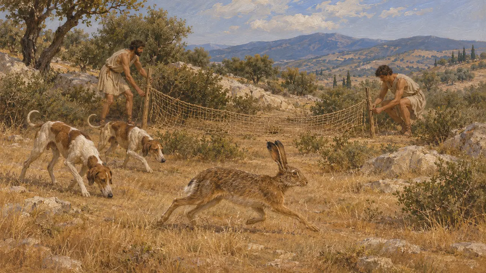
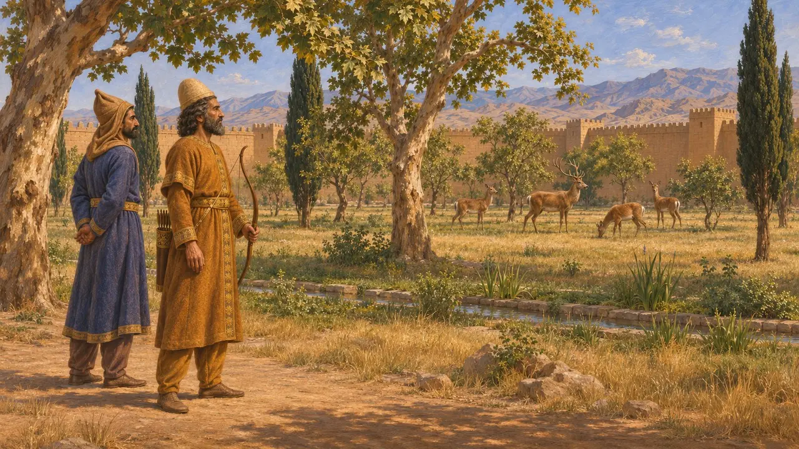
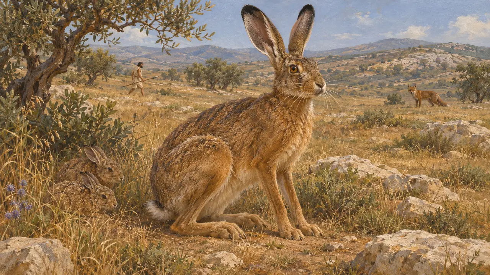
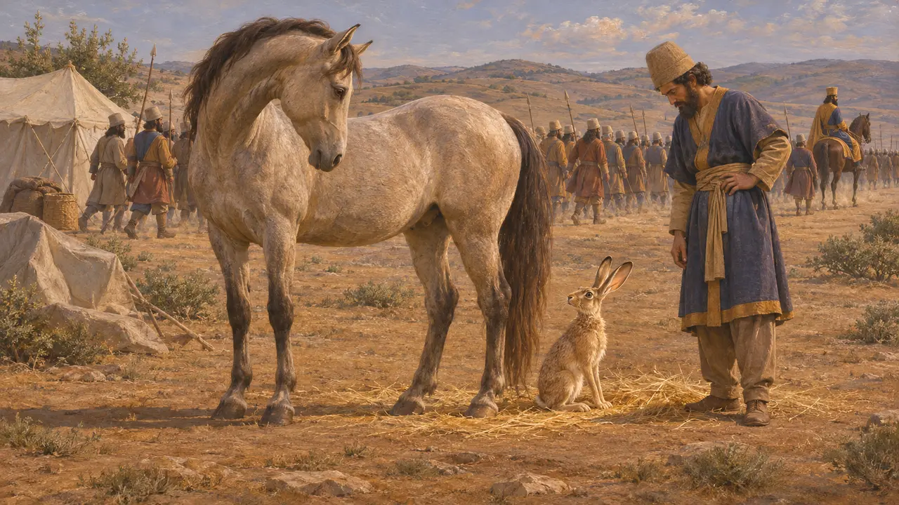
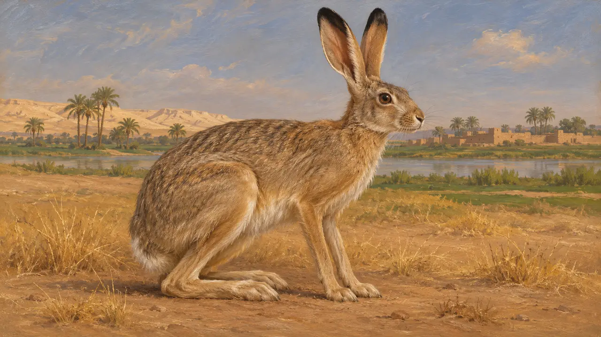

Enzyklopädie › Tierwelt und Wetter

Der Hase
Niederwild des offenen Landes von Griechenland bis Ägypten, 6.-5. Jahrhundert v. Chr.
Im Spiel: Level 1: Das Grab des Gründers, Level 2: Der Lanzenträger, Level 3: Die Lüge, Level 4: Die Terrasse, Level 5: Die Gründungsurkunde, Level 6: Die Schiffbrücke, Level 7: Sardes brennt, Level 8: Die Bucht von Marathon, Level 9: Der Kanal, Level 10: Die Heißen Tore, Level 11: Das Finale
Der Hase war ein häufiges Tier des offenen Geländes von Griechenland bis Ägypten. Griechische Autoren sahen in ihm das übliche Jagdwild, und Herodot erwähnt ihn an zwei Stellen, einmal zu seiner Fortpflanzung und einmal zu einem Omen. Die Belege für persische Hasenjagd sind dünn, und das meiste, was man weiß, stammt von griechischen Autoren.
Im Spiel: Das Spiel zeigt auf elf Levels, von Pasargadae bis Plataiai, Hasen als Kulisse auf offenem Gelände, nicht aber im Mykale-Epilog. Keine Regel wertet sie aus, und sie beeinflussen das Spiel nicht.

Der Hase in der griechischen Jagd
Antiker BerichtXenophon, der im frühen 4. Jahrhundert schrieb, widmete einen großen Teil seiner Abhandlung über die Jagd dem Hasen. Er beschreibt Hunde, die der Fährte folgen, und den Einsatz von Netzen, und er behandelt den Hasen als das übliche Wild des griechischen Jägers. Sein Zeugnis betrifft Griechenland nach den Perserkriegen, nicht den persischen Hof.
Xenophon, Cynegeticus 2-8

Jagd am persischen Hof
Antiker BerichtXenophon beschreibt die persische Jagd in der Kyrupädie, vor allem die auf Großwild, und er kannte umzäunte Parks, Paradiese genannt, die für den König und seine Adligen gehalten wurden. Sein Bild vom Hof des Kyros ist idealisiert, und er hebt Hasen für die königliche Jagd nicht eigens hervor.
Xenophon, Cyropaedia

Herodot über den Hasen
Antiker BerichtHerodot berichtet, dass der Hase von allen Geschöpfen und vom Menschen gejagt wird und dass er als einziges Tier empfängt, während er bereits trächtig ist. Er führt dies als Zeichen göttlicher Vorsehung an, die Beutetiere fruchtbar erhalte. Die moderne Biologie zeigt, dass Hasen sich tatsächlich häufig vermehren und während der Trächtigkeit empfangen können, wenn auch nicht genau so, wie er es beschreibt.
Herodotus 3.108

Das Hasenomen von 480 v. Chr.
Antiker BerichtHerodot berichtet, dass beim Aufbruch des Heeres des Xerxes eine Stute einen Hasen gebar. Er sagt, Xerxes habe das Vorzeichen nicht beachtet, obwohl man es als Zeichen für die spätere Flucht des Heeres deutete. Die Geschichte stammt von Herodot, und keine persische Quelle erwähnt sie.
Herodotus 7.57

Der Hase in Ägypten
Zeitgenössisch belegtDer Kaphase lebt in Ägypten und in trockenen Gegenden der gesamten Region, und das Spiel setzt ihn im Level von Memphis ein. Hasen erscheinen in der ägyptischen Kunst, und ein Hasenzeichen wurde in der Hieroglyphenschrift verwendet, insbesondere für den Namen des Hasengaus, zu dem Hermopolis gehörte. Diese ägyptischen Quellen zeigen nicht, wie weit sich persische Beamte dort an der Hasenjagd beteiligten.
P. Briant, From Cyrus to Alexander, 2002
Quellen
- Xenophon, Cynegeticus 2-8
- Xenophon, Cyropaedia
- Herodotus 3.108
- Herodotus 7.57
- P. Briant, From Cyrus to Alexander, 2002